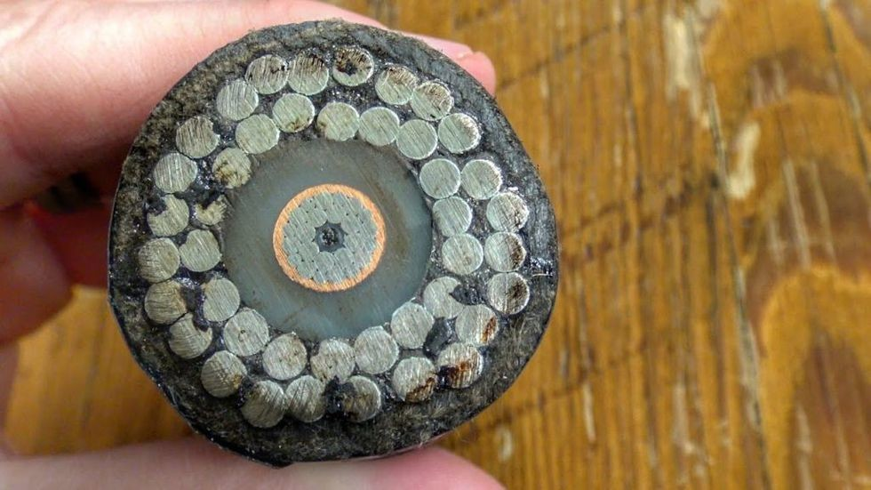

Cómo son por dentro los cables submarinos que llevan Internet de un continente a otro
06-05-201810:26 h
Los más de 1.000 millones de metros de cable submarino que varias empresas llevan instalando desde 1866 son los responsables de que cada día tengas conexión a Internet, incluso si es conexión inalámbrica. Eso los convierte en unos cables sumamente importantes, por lo que es esencial que puedan proteger la fibra óptica que llevan en su interior.
Sección del cable del fabricante Norddeutsche Seekabelwerke GmbH (NSW), filial de General Cable.
Ya en una ocasión os mostramos el mapa completo en el que ver todos los cables que hay instalados y en proceso de instalación actualmente, y hoy vamos a pararnos a ver un poco más detenidamente qué hay en el interior de estos cables. Constan de hasta ocho capas, desde la fibra óptica del interior hasta toda una serie de recubrimientos para tratar que no se dañe.
Diseñados para proteger de casi cualquier cosa
El fondo del mar no es un lugar seguro. Entre accidentes geográficos, anclas y mordiscos de animales como tiburones, estos cables están expuestos a bastantes peligros, y repararlos después es costoso. Para que te hagas una idea, primero hay que encontrar dónde está dañado, ir allí en barco, subir el cable a la superficie con una especie de garfio, unir o solucionar el problema y volverlo a sumergir.
Por eso, la mejor manera de ahorrarse el dinero de las reparaciones es tratar de prevenir para que los cables no se dañen. Es ahí donde entran en juego estos cables casi tan gruesos como un brazo, en cuyo interior se protegen los pequeños hilos de fibra óptica. Este es el orden en el que te las puedes encontrar desde la exterior a la interior:
La primera capa que nos encontramos, la exterior, es de polietileno, un plástico bastante común con el que se recubre todo el conjunto. Debajo tenemos otra pequeña capa plástica de cinta de tereftalato de polietileno, que es un material popular por su alta resistencia a la tracción o su aislamiento eléctrico. Y en tercer lugar hay una serie de cables trenzados de acero, que son la principal protección física al darle al conjunto su dureza.
Detalle de las distintas capas de forma escalada.
Luego tenemos otras dos capas protectoras, una de policarbonato y un tubo de aluminio o de cobre, seguidas de otra de vaselina para proteger contra el agua. Y entonces, justo debajo de esas siete capas, nos encontramos con hasta 16 hilos de fibra óptica. La cantidad de hilos depende del cable, pero cada uno es capaz de transportar 3.840 gigabits por segundo, por lo que en total cada cable submarino puede llegar a transportar 60 terabits por segundo.
¿Demasiadas capas?
Y bien, si te parece que es un poco exagerado recubrir tanto un cable en el que sólo hay delgados hilos de fibra óptica, recuerda que se han avistado animales marinos como tiburones pegándoles mordiscos, y que todas estas capas a veces ni siquiera son suficientes para protegerlos de estos animales.